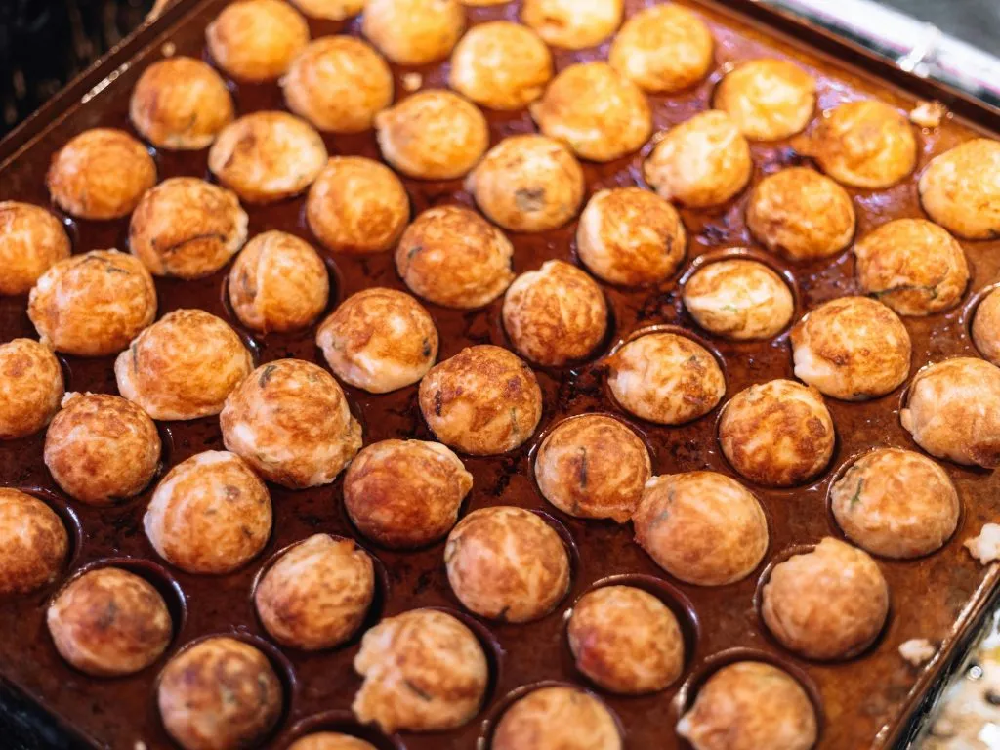

How to cook a Takoyaki?
Description
Takoyaki is a popular Japanese street food made of a batter filled with diced octopus, green onions, and other ingredients. It's cooked in a special molded pan, resulting in round, crispy balls that are often topped with takoyaki sauce, mayonnaise, and bonito flakes.
This recipe will guide you through making delicious homemade takoyaki. It's a fun dish to prepare and perfect for gatherings!
Ingredients
- 1 cup all-purpose flour
- 1 1/2 cups dashi broth (or water)
- 1 egg
- 1/2 cup diced cooked octopus
- 1/4 cup chopped green onions
- 1/4 cup tenkasu (tempura scraps)
- Pickled ginger (optional)
- Takoyaki sauce
- Kewpie mayonnaise
- Bonito flakes (katsuobushi)
- Vegetable oil for cooking
Instructions
- In a bowl, mix flour, dashi broth, and egg until smooth to create the batter.
- Preheat a takoyaki pan over medium heat and grease it with vegetable oil.
- Pour the batter into each mold, filling them about halfway.
- Add diced octopus, green onions, tenkasu, and pickled ginger to each mold.
- Once the edges start to cook, use a skewer to turn the takoyaki balls 90 degrees.
- Continue cooking and turning until they are golden brown and cooked through.
- Remove from the pan and drizzle with takoyaki sauce and mayonnaise. Sprinkle bonito flakes on top.
- Serve hot and enjoy your delicious homemade takoyaki!
Now enjoy your Takoyaki!